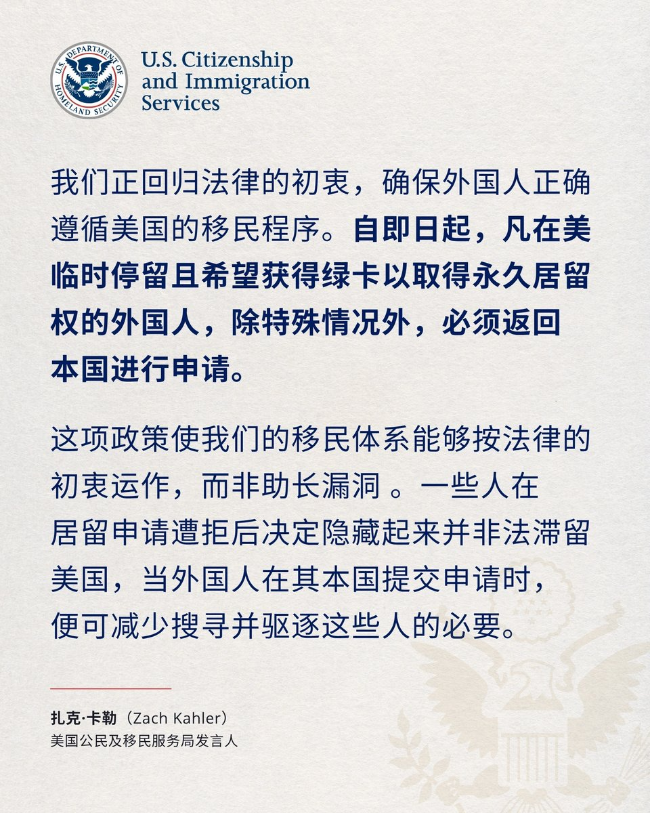

许白
@xubai_01
这对于任何临时身份入境且想转为永久居留的外国人，都不是一件好消息。
因为你也不知道你还能不能回得来🥲

美国驻华使领馆 U.S. Mission to China
@USA_China_Talk
美国公民及移民服务局（USCIS）正依据长期有效的法律及过去的法院裁决，要求部分持有临时签证、且有意在美国永久居留的外国人，必须返回本国，通过美国国务院@StateDept申请永久签证。
我们正回归法律的初衷，确保外国人正确遵循美国的移民程序。 https://t.co/vNnH8IwiKk https://t.co/fJ7IbWW6PB